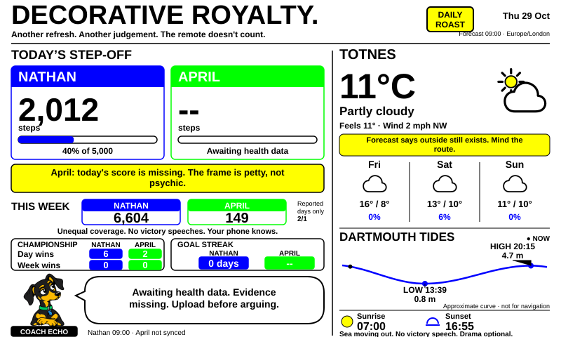

Your fitness tracker has a grievance department
Move, you two.
Nathan vs April: steps, championship titles, goal streaks and increasingly personal feedback. Plus weather, tides and sun times.
Checking forecast timestamp…

Championship rules: More uploaded steps wins a completed UK day. Weekly titles use the total steps from a complete Monday–Sunday, with all seven days reported by both phones. Ties award no title; missing uploads are not zero. Tallies cover all recorded history and update if older scores are corrected. Today's crown is a live lead, not a settled title.